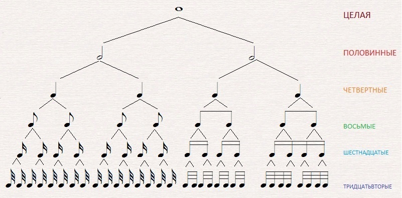
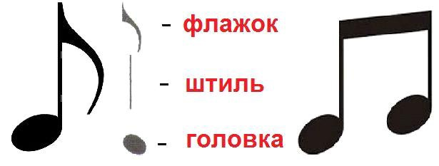

Урок 3. Длительности нот, штили, темп.
Теория
В музыке длительность ноты показывает, как долго она звучит. Основные длительности: целая, половинная, четвертная, восьмая, шестнадцатая.
- Целая нота — самая длинная, обозначается пустым овалом без штиля.
- Половинная нота — вдвое короче целой, пустой овал со штилем.
- Четвертная нота — закрашенный овал со штилем.
- Восьмая и шестнадцатая ноты — имеют флажки на штиле.
Штиль — это вертикальная палочка, которая рисуется справа от нотного овала (или слева, если нота ниже средней линии).
Темп — это скорость исполнения музыки. Он может быть медленным, умеренным или быстрым. Темп часто обозначается словами: Andante, Allegro, Moderato.
Длительности нот и темп помогают музыкантам правильно исполнять ритм произведения.
Упражнения
- Распознавание длительности: Определите, какая нота звучит дольше (Целая и половинная ноты; Четвертная и восьмая ноты; Шестнадцатая и четвертная ноты).
- Ритмическое повторение: Повторите ритмический рисунок, используя разные длительности нот (Четвертная, Восьмая, Половинная, Шестнадцатая).
Аудио-примеры
Примеры длительностей нот:
Темп: Andante (медленно):
Темп: Allegro (быстро):
Визуальные примеры
Обозначения длительностей нот:

Штили и флажки у нот:
